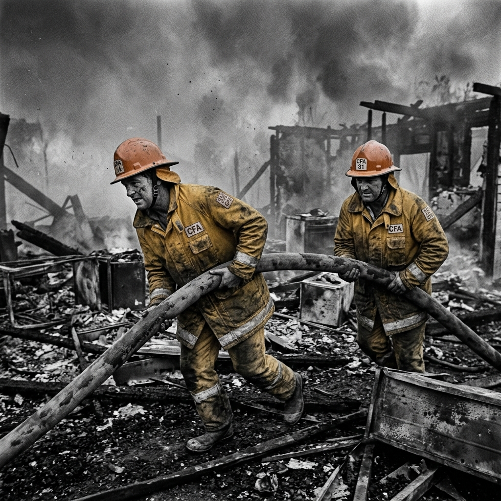
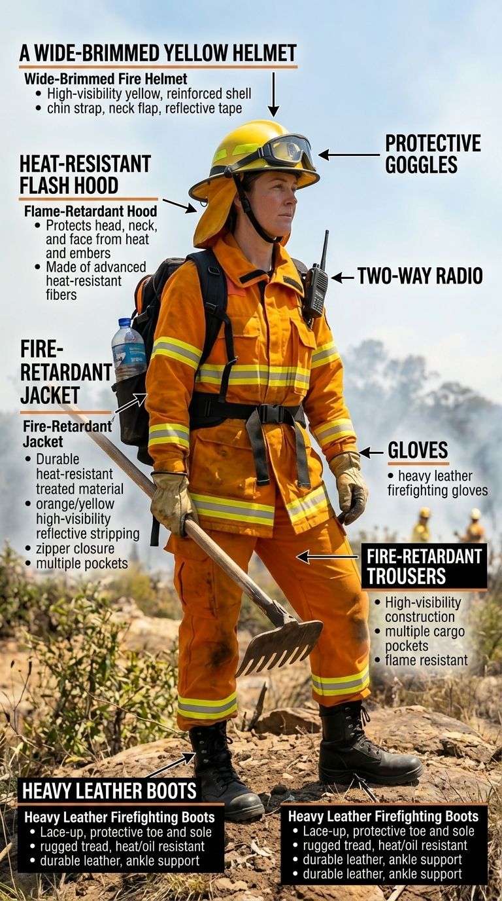
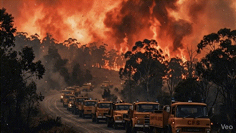
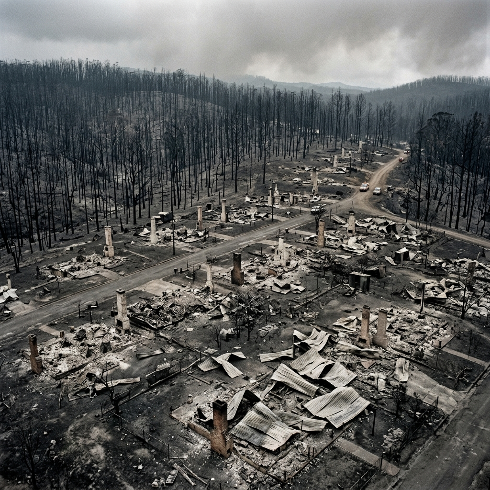
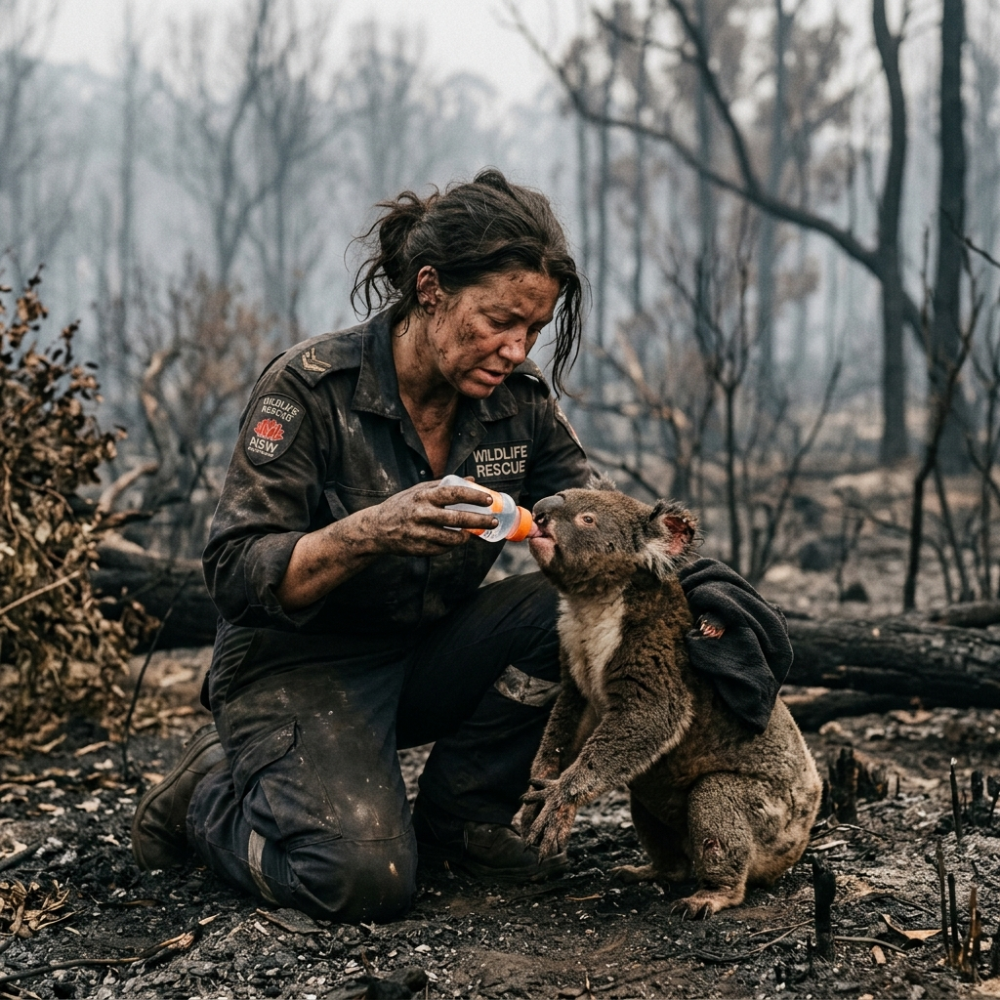
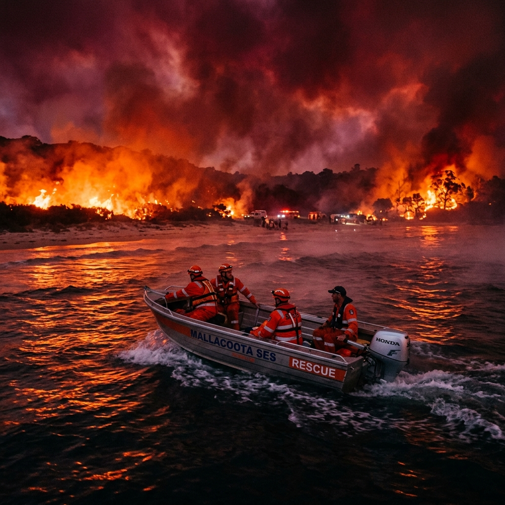
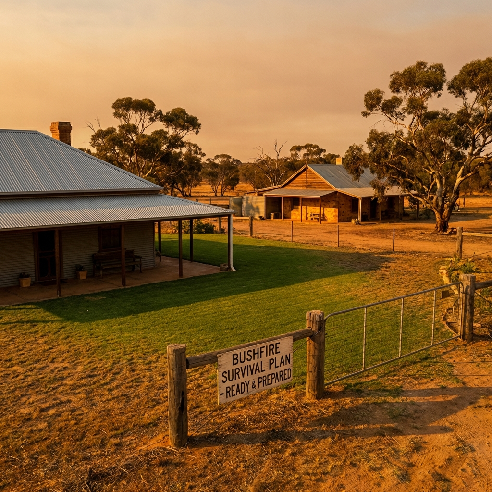
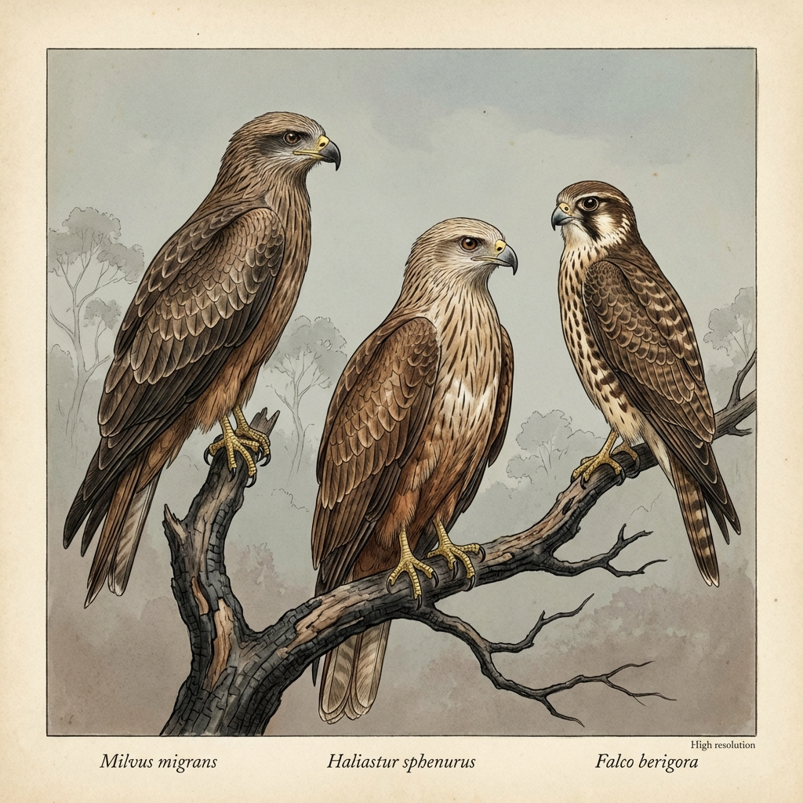

Visual Features, Captions and Meaning in Informative Texts
YEAR 5 ENGLISH • UNIT 2: BUSHFIRES • LESSON 23
Slide 1 Notes: Welcome & Context
Welcome students to Lesson 23. Explain that today we are combining visual analysis (analysing how images and diagrams multiply meaning) with core fire science principles and the fascinating topic of Northern Australian Firehawks.
Ensure standard pathway is toggled on. If supporting differentiated pathway, slide content will adjust dynamically.
Visual Literacy & Communicative Purpose
Informative texts utilise visual features to carry critical technical data, not just decoration. Consider how these elements multiply meaning:
Point out the two graphics from the Bushfires site: the PPE breakdown and Ember Attack diagram.
Discussion Prompts:
What is the foregrounded/most salient feature in each graphic?
Why does the Ember Attack diagram use red arrows? (To show unseen wind directions blowing sparks).
How do these images make the written text more precise?
Interactive Visual Match: Part 1
Click a card on the left, then click its matching communicative purpose on the right to pair them:
Pair the image card on the left with the correct describing word card on the right:
PPE Breakdown Graphic
Ember Attack Diagram

Ash Wednesday Gear Photo
Illustrates unseen, dynamic hazard mechanics and directional wind threats.
Documents historical 1980s protective clothing compared to modern gear.
Provides high-density technical specifications about physical safety equipment.

Yellow Fire Jacket
Directional Wind Arrow

Yellow Fire Truck
Carries water to the fire scene.
Keeps the firefighter safe and cool.
Shows which way the sparks are blowing.
Slide 3 Notes: Matching Visual Purpose
Guide the class through matching cards. Students can come up and click to pair elements on the board.
Differentiate Switch: Toggling the "Differentiate" switch changes the cards to simpler, literal Year 2 vocabulary matching pairs for Lucas.
Interactive Visual Match: Part 2
Match the landscape and incident images with their specific visual intent:
Match the fire safety image names with their describing sentences:
Black Summer Satellite Plumes

Black Saturday Aerial Destruction

Black Summer Koala Rescue
Starkly reveals human loss and structural vulnerability of properties.
Triggers emotional concern highlighting ecological and wildlife impacts.
Demonstrates immense continental scale and broad geographical reach of smoke.
Big Helicopter
Thirsty Koala

Bright Red Beach Sky
Shows that a dangerous fire is very close by.
Brings help and water to isolated towns.
Needs drinking water after a big fire.
Slide 4 Notes: Advanced Visual Analysis
Have students identify framing choices. Satellite imagery uses a bird's-eye wide lens (exposing geographic scale), while the koala uses close-up salience (triggering pathos/empathetic connection).
Fire Science: The Fire Triangle
Which three components are absolutely required for a bushfire to ignite and sustain itself?
Which three things does a fire need to keep burning?
Correct! Fire science states that removing Fuel (e.g. clearing leaves), Heat (e.g. cooling with water), or Oxygen (e.g. smothering with foam) will instantly break the Fire Triangle and extinguish the flames.
Great work! A fire needs fuel (wood/grass), heat (to start it), and air (oxygen) to burn. If we take one away, the fire goes out!
Slide 5 Notes: Fire Triangle Quiz
Introduce the science of fires. Emphasise that this literal comprehension underlies the land management strategies (hazard reduction clearing forest fuel loads) taught later.
Fire Science: Fuel Load and Flammability
How does forest fuel moisture content directly affect bushfire flammability and ignition?
What happens to wet leaves when a fire starts?
Correct! Moisture acts as a heat sink. Heat must first evaporate the water content in dry leaves and bark before the cellulose can undergo pyrolysis and ignite.
Correct! Dry brown leaves burn very fast, but wet green leaves are hard to burn because they contain water.
Slide 6 Notes: Forest Fuel Science
Highlight the distinction between high moisture levels (safety) and desiccated dry fuel loads (danger). Relate this to controlled burns in dry seasons.
Fire Science: Extreme Fire Weather
Which specific meteorological combination represents the highest wildfire danger in Australian savannas?
Which day represents the most dangerous fire weather?
Correct! Low relative humidity desiccates fuel loads, hot temperatures bring fuel closer to ignition thresholds, and strong winds provide heavy oxygen and carry embers ahead of the main fire front.
Correct! Strong hot winds blow fire and embers very quickly, making it very hard to put out.
Slide 7 Notes: Fire Weather
Define relative humidity and temperature thresholds. Introduce how rangers monitor these metrics daily to predict catastrophic fire behaviour.
Interactive Sort: Weather Risk Zones
Sort the following weather metrics into their correct fire risk category:
Sort the days into Hot/Dangerous vs Cool/Safe categories:
Wind 45 km/h
Humidity 65%
Humidity 8%
Temp 43°C
Wind 8 km/h
Temp 22°C
Strong Hot Winds
Heavy Rain Shower
Temperature 41°C
Cool Winter Morning
🔥 CATASTROPHIC RISK
🔥 DANGER (HOT & DRY)
💧 LOW / MODERATE RISK
💧 SAFE (COOL & WET)
Slide 8 Notes: Weather Risk Sorting
Students click a weather metric card (turns orange) and then click either the "Catastrophic Risk" or "Low/Moderate Risk" zone to place it.
Incorrect pairings shake and return to the pool. Correct cards turn green and lock.
Nature's Arsonists: The Northern Firehawks
For centuries, Indigenous Australian cultures have documented a remarkable ecological mystery in Northern savannas: birds that intentionally spread fire.


Rather than escaping bushfires, three specific raptors (birds of prey) actively target fire fronts as opportunistic, coordinated hunting grounds.
Slide 9 Notes: Firehawks Curiosity Feature
Introduce the term "raptor" (bird of prey). Discuss how these birds treat fire as an ally rather than an enemy.
Indigenous knowledge (TEK - Traditional Ecological Knowledge) has recorded this behaviour for generations, long before Western scientists validated it.
Interactive Raptor Species Match
Match each raptor species to its distinct biological and behavioral profile:
Match the birds with their names by clicking them:
Black Kite (Milvus migrans)
Whistling Kite (Haliastur sphenurus)
Brown Falcon (Falco berigora)
Highly active and focused; specifically moves burning twigs to flush prey.
The most abundant and social; gathers in hundreds around major fires.
Named for its loud whistle; often seen carrying smouldering sticks.
Black Kite Bird
Whistling Kite Bird
Brown Falcon Bird
Named for its loud, whistling call.
Very focused hunter that watches fire.
Flies in big social groups near smoke.
Slide 10 Notes: Raptor Species
Guide students through matching each scientific name and trait. Highlighting these three distinct species introduces biological diversity and adaptation.
Firehawk Hunting: Step 1 & 2
How do Firehawks gather, and what is their initial action around a bushfire?
What is the first thing a Firehawk does to start its hunt?
Correct! Step 1 (Ignition Gathering) and Step 2 (Stick Acquisition) occur when raptors fly directly into low-intensity edges of active fires to grab smouldering charcoal twigs.
Correct! The bird uses smoke as a giant signpost. It flies towards the fire to pick up a warm smouldering stick in its claws or beak.
Slide 11 Notes: Steps 1 & 2
Explain how Firehawks leverage the visual vector of rising smoke columns to locate fire zones from kilometres away. This is highly efficient spatial reasoning.
Firehawk Hunting: Step 3 & 4
What physical barrier are Firehawks known to cross, and how do they deposit sparks?
How do the birds carry and spread the fire?
Correct! Step 3 (Transport) and Step 4 (Deposition) demonstrate complex spatial planning. Raptors fly up to 1000 metres away, intentionally bypassing pre-cleared firebreaks to ignite fresh fuel zones.
Correct! They can fly right over rivers and roads. They drop the warm twig in dry grass to start a small new fire.
Slide 12 Notes: Steps 3 & 4
Emphasise the significance of raptors crossing boundaries like rivers or artificial firebreaks. This is an advanced spatial cognitive skill.
Interactive Sequence: The 5-Step Hunt
Reorganise the firehawk hunting sequence into its correct chronological order:
Order the steps from first to last using the arrow buttons:
?Step 3: Transport - Raptor flies up to 1 kilometre away, bypassing firebreaks or rivers.Raptor flies across the river or road.
?Step 1: Ignition Gathering - Spotting smoke plumes and flying directly to the active fire edge.Bird spots smoke and flies to the fire.
?Step 5: Feeding - Swooping in to capture grasshoppers, mice and lizards fleeing the flames.Bird eats insects running from the new grass fire.
?Step 2: Stick Acquisition - Picking up a smouldering twig in its talons or beak.Bird grabs a smouldering twig.
?Step 4: Deposition - Dropping the burning ember into unburnt, dry grass.Bird drops stick into dry grass.
Slide 13 Notes: Sequence Check
Allow a student to reorder the sequence on screen using the up/down arrows, then click "Check Sequence" to submit.
Correct items lock green. Incorrect items show red border. Great opportunity to review cause-and-effect timeline sequencing.
Deep Inferential: Raptor Intentionality
Why do scientists argue that fire-spreading behaviour in raptors is goal-directed and intentional, rather than purely accidental?
Why do we think the bird spreads the fire on purpose?
Correct! Intentionality is inferred because the action is repeatably directed towards a future goal—flushing out prey. Accidental carriage would not involve systematically targeting dry grass across firebreaks.
Correct! The bird is a clever hunter. It drops the stick, sits on a high branch, and waits to catch grasshoppers running away!
Slide 14 Notes: Inferential Intentionality
This is a transition to deep inferential questioning. Discuss evidence of goal-directed adaptation in animal kingdom, comparing it to tool use in chimpanzees or crows.
Deep Inferential: The Scientific Controversy
What represents the core scientific debate between Western researchers and Indigenous/local eyewitnesses?
Why do some scientists want to see more proof?
Correct! Western science prioritises quantitative proof and visual records (e.g. video files), whereas Traditional Ecological Knowledge (TEK) has built reliable qualitative evidence over centuries.
Correct! Western science loves having clear video proof. Indigenous rangers have known it is real for hundreds of years!
Slide 15 Notes: The Controversy
Discuss the value of multi-perspective evidence. Highlight the role of traditional Indigenous ecological knowledge as an authoritative source in modern biology.
Deep Inferential: Land Management Impacts
How do Firehawks directly impact how rangers plan and execute controlled burns?
Why do fire rangers have to be careful of Firehawks?
Correct! Firebreaks are designed as empty containment corridors (often 10-20 metres wide) to stop ground fire spread. Raptors carry fire *above* these barriers, demanding wider control boundaries.
Correct! Cleared dirt roads usually stop fire, but firehawks can fly right over them carrying sparks, starting fires where it's supposed to be safe!
Slide 16 Notes: Management Impact
Tie this back to the "Ember Attack Diagram" and "Firebreaks" concepts. Discuss how animals can actively disrupt human ecological containment efforts.
Interactive Summary: Living with Firehawks
Select the correct technical terms from the pool to complete the summary paragraph:
Click the word cards to fill in the blank spaces:
Firehawks in Northern Australia demonstrate a complex hunting strategy. These raptors fly directly into low-intensity flames to gather smouldering ?. They transport these embers up to 1 ? away, frequently bypassing artificial boundaries like roads or ?. When dropped into dry grasslands, the resulting fires flush out hidden insects and lizards. While Western science demands video ? to conclusively verify intentionality, local Rangers and ancient Indigenous ? have documented this goal-directed behaviour for centuries.
The Firehawk is a very clever hunter. It flies into smoky areas to grab warm ? with its claws. It flies across roads and ? to start a small fire in the dry grass. When small lizards run away from the sparks, the bird swoops in to eat ?. Fire rangers have to make wider ? to stop these clever birds from spreading the flames.
Slide 17 Notes: Cloze Check
Click a blank box (turns orange), then click the correct option from the pool below to fill it in.
Great summary activity. Reviews vocabulary: *kilometre*, *evidence*, *knowledge* using Australian spelling.
Interactive Caption Match
Match each designed caption to its intended communicative effect in a report:
Match the pictures with the correct action descriptions:
"According to CSIRO, extreme weather has increased..."
"A devastating aerial view of Murrindindi township..."
"A volunteer offering a water bottle to a dehydrated koala..."
Appeals to reason (logos) documenting high physical structures impact.
Appeals to emotion (pathos) highlighting immediate wildlife suffering.
Establishes credibility (ethos) using an authoritative scientific source.
Koala rescue image
Helicopter delivery image
Raptor carrying stick image
Volunteers bringing food and supplies to a cut-off town.
Whistling Kite flying with fire in its claws.
Helping a thirsty animal in the smoking woods.
Slide 18 Notes: Caption and Argumentation
Introduce rhetoric (ethos, pathos, logos) for standard Year 5. Show how different captions shape how we interpret identical visuals.
Self-Reflection & Success Criteria
Tick off today's learning outcomes in your writing book:
Let's check what we learned today:
✅ I can distinguish how visual features like arrows and layouts multiply literal text meaning.
✅ I understand the Fire Triangle (Fuel, Heat, Oxygen) and weather thresholds of catastrophic fire hazard.
✅ I can infer the intentional hunting adaptations and management challenges of Northern firehawk raptors.
✅ I can match fire safety pictures to their correct descriptive sentence.
✅ I know that dry brown leaves burn fast, but wet green leaves burn slowly.
✅ I know that Firehawks can fly across rivers carrying burning sticks to start new hunts.
Slide 19 Notes: Reflection
Invite students to share one thing they found most surprising (e.g. firehawk raptors carrying burning twigs over roads).
Quiz Results & Score Report
Congratulations on completing the quiz slides! Here is your tally:
0 / 8
Final Mark Tally
Keep trying to complete the quiz!
Question Breakdown
Slide 20 Notes: Quiz Results
Guide students in reviewing their marks. Tally up the class performance. Celebrate successes and review high-error slides.
Mastering Multimodal Information
Keep looking closely at the Australian bush — a master hunter is at work!
JOSHUA AI • JOSHUA ACADEMY • 2026
Slide 21 Notes: Wrap Up
Conclude the lesson. Direct students to complete their worksheets and assessments independently.